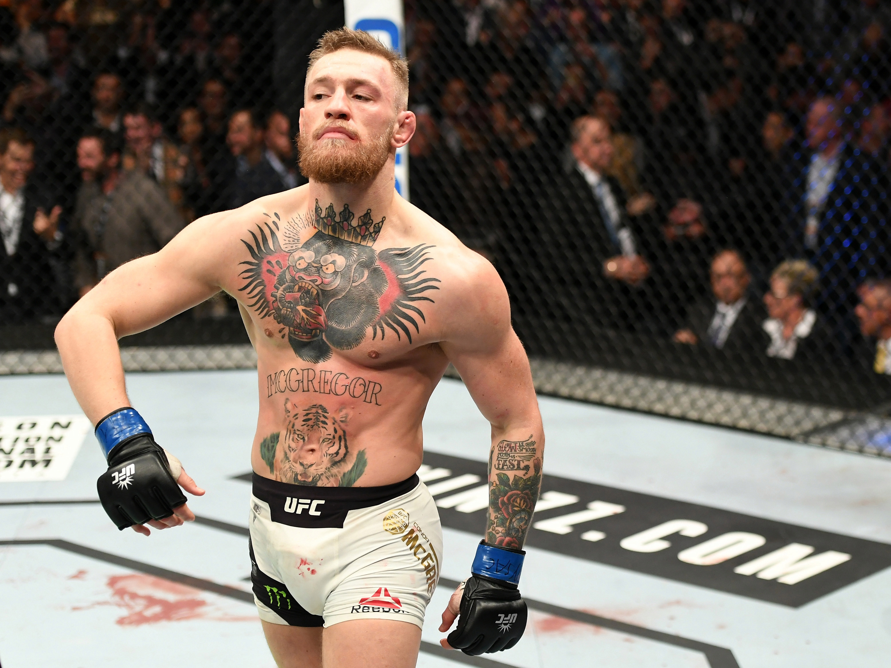
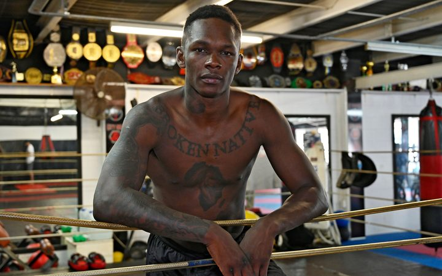
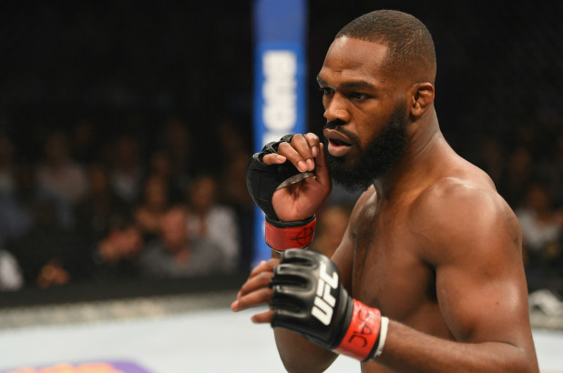
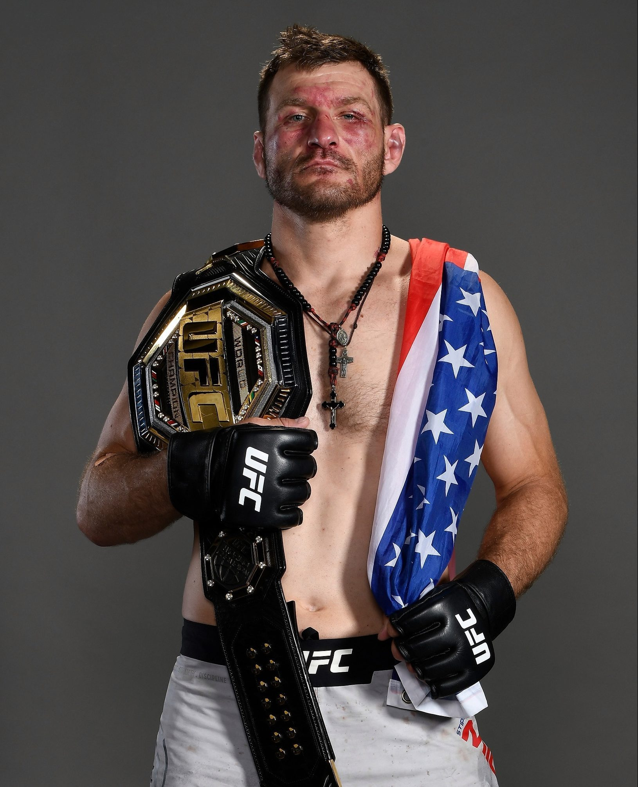

 |
Conor Anthony McGregor (nacido el 14 de julio de 1988) es un peleador irlandés de artes marciales mixtas que compitió en las categorías de peso pluma, peso ligero y ocasionalmente en la de peso wélter de Ultimate Fighting Championship (UFC). |
 |
Israel Mobolaji Adesanya (22 de julio de 1989) Luchador de artes marciales mixtas. Nació en Lagos, Nigeria. Fue nombrado número seis de la categoría peso mediano en 2017. En 2012, hizo su debut profesional, tras haber luchado por varios años, en China y Nueva Zelanda, como amateur. Después de varios años y un invicto de 11 -0, llegó a la UFC en 2017. Allí se convirtió rápidamente en una de las nuevas figuras de la MMA. Adesanya es el actual campeón de la UFC en peso mediano (2019) sustentando un récord de 18-0 (14 KOs). |
 |
Jonathan Dwight "Bones" Jones (nacido el 19 de julio de 1987) es un peleador estadounidense de artes marciales mixtas que compite en la categoría de peso semipesado de la UFC donde es el actual campeón. Ampliamente considerado como uno de los más talentosos y polémicos luchadores del género, Jones ostenta el récord de ser el campeón de peso semipesado de UFC más joven en la historia de dicha organización, con 23 años y ocho meses, donde ha logrado defender su título en 8 ocasiones, batiendo el récord de defensas en dicha categoría. A lo largo de su carrera Jones derrotó a numerosos campeones de UFC como Maurício Rua, Quinton Jackson, Lyoto Machida, Rashad Evans, Vitor Belfort o Daniel Cormier además de vencer en dos combates titulares a Alexander Gustafsson y su única derrota, ante Matt Hamill, fue por descalificación. En 2017, el presidente de UFC Dana White declaró que Jones es "probablemente el mejor de todos los tiempos". Actualmente está en la posición #1 en el ranking oficial de UFC de los mejores libra-por-libra. |
 |
Stipe Miočić (19 de agosto de 1982, Independence, Ohio) es un peleador de artes marciales mixtas, bombero y técnico de emergencia médico estadounidense con ascendencia croata, que es el actual campeón de la categoría de peso pesado del Ultimate Fighting Championship. Actualmente está en la posición No.4 en el ranking de los mejores libra-por-libra de UFC. |